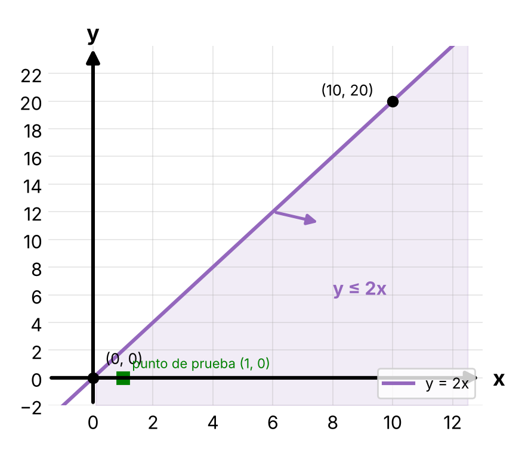
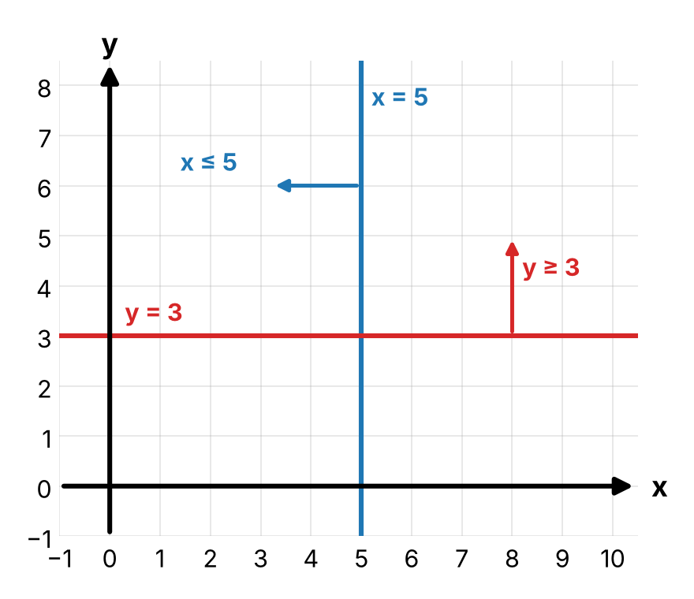
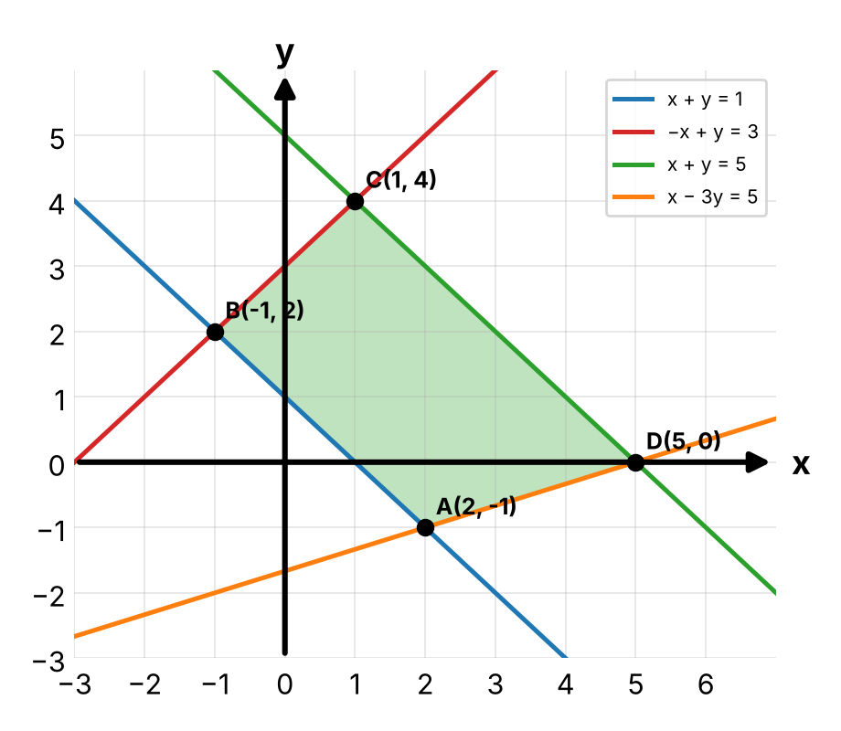

Cada casilla tiene las letras del tipo de pregunta, los puntos de dificultad (•, ••, •••) y el número del ejercicio. «—» o casilla vacía: esa convocatoria no tuvo programación lineal.
Toca un ejercicio para abrir su enunciado. Con el modo subrayador encendido, al tocarlo lo marcas como hecho (o lo desmarcas), como con el subrayador en papel.
¿Qué significa cada letra?
Andalucía
Desde 2024, las «suplentes» son las reservas de la ordinaria (1 y 2) y de la extraordinaria (1 y 2).
Resto de comunidades
Desliza la tabla hacia la izquierda para ver todas las comunidades.
Ejemplo guía:Andalucía Modelo 2026 (también en los Modelos 2024 y 2025). Un taller confecciona pañuelos y corbatas. Dispone como máximo de 60 horas semanales. Cada pañuelo necesita 2 h y da 4 € de beneficio; cada corbata, 3 h y 6 €. El número de corbatas más el doble del de pañuelos debe ser, como mínimo, 28. ¿Cuántas unidades de cada prenda hay que confeccionar para obtener el máximo beneficio?
Paso
Qué hago
En el ejemplo
0
Ordenar los datos y plantear: incógnitas, función objetivo y restricciones
\(F(x,y)=4x+6y\) → MAXIMIZAR
1
Dibujar las rectas con su tabla de valores, elegir el semiplano de cada restricción y sombrear la región factible
Triángulo ABC
2
Calcular los vértices (sistema de dos rectas)
A(14, 0), B(30, 0), C(6, 16)
3
¿La región es acotada o no acotada? (teorema fundamental)
Acotada → el máximo está en al menos un vértice
4
Calcular el valor de F en cada vértice
F(A) = 56, F(B) = 120, F(C) = 120
5
Responder: cuánto vale el óptimo, dónde se alcanza y qué significa
En la primera fila pongo lo que se quiere maximizar o minimizar. Debajo, cada recurso o condición del enunciado (horas, material, compromiso…) en una fila: cada una dará una restricción.
Pañuelos (x)
Corbatas (y)
Condición
Se escribe
Beneficio (€)
4
6
→ MAXIMIZAR
\(F(x,y)=4x+6y\)
Horas
2
3
como máximo 60
\(2x+3y\le 60\)
Compromiso
2
1
como mínimo 28
\(2x+y\ge 28\)
2. Escribir el planteamiento
Qué es
Incógnitas
Lo que hay que decidir, con sus unidades y el periodo: x = n.º de pañuelos que se confeccionan a la semana; y = n.º de corbatas que se confeccionan a la semana.
Función objetivo
Lo que se quiere maximizar (beneficio, ingresos…) o minimizar (coste, tiempo…).
Restricciones
Las condiciones del enunciado escritas como inecuaciones.
No negatividad
\(x\ge 0,\ y\ge 0\): se escriben cuando x e y son cantidades (unidades, kg, horas…). Si el ejercicio solo da inecuaciones (sin contexto), se usan solo las que da el enunciado.
Cuidado con «el doble». «B es el doble de A» se escribe \(y=2x\) (el doble de A es \(2x\)), no \(2y=x\). Antes de escribir, dilo con las letras: «el número de bicicletas (x) es mayor o igual que el número de patinetes (y) más 7» → \(x\ge y+7\).
4. A tener en cuenta al plantear
Antes de escribir las restricciones, miro si el enunciado tiene alguna de estas situaciones. Cada una cambia un detalle del planteamiento.
Qué hago
Ejemplo de examen
Datos en una tabla
Leo la tabla por filas: cada recurso o condición (horas, kg, calcio…) da una restricción. La fila del precio, beneficio o coste da F.
El enunciado no da el número de la restricción, sino los datos para calcularlo. Hago la cuenta antes de escribir la restricción y la dejo escrita en el examen.
El número suelto (o la k) se suma igual en todos los puntos: no cambia dónde está el óptimo, solo cuánto vale. Busco el óptimo como siempre y sumo el número al evaluar cada vértice.
Andalucía Reserva 2 2013 : \(f(x,y)=2x+3y+k\), con máximo 19. Sin la k, \(2x+3y\) vale 1 en A(2, −1), 4 en B(−1, 2), 14 en C(1, 4) y 10 en D(5, 0). El máximo está en C, con k o sin ella. \(14+k=19\Rightarrow k=5\). Mínimo en A: \(1+5=6\). Andalucía Extraordinaria Suplente 2 2026 : \(F(x,y)=2x+3y-2\). Máximo en (4, 5): \(2\cdot 4+3\cdot 5-2=21\). Mínimo en (2, 0): \(2\cdot 2+3\cdot 0-2=2\). Si olvido el −2, los puntos son los mismos, pero los valores salen mal (23 y 4).
Cantidades que pueden tener decimales
kg, litros, hectáreas, horas… admiten decimales: la solución decimal vale. Personas, cajas, viajes… no: la respuesta tiene que ser entera (apartado 5).
¿Por qué el número suelto no cambia el punto óptimo?
Las rectas \(2x+3y-2=k\) son las mismas que \(2x+3y=k+2\): las mismas rectas paralelas, con otro número. La última que toca la región es la misma; solo cambia el valor que le corresponde.
Con la k del primer ejemplo pasa igual: se suma en todos los vértices.
Ojo: si el parámetro está en un coeficiente (por ejemplo \(F(x,y)=ax+3y\)), sí cambia la inclinación de las rectas y puede cambiar el vértice óptimo. Eso es la Pregunta 6.
5. Si las cantidades tienen que ser enteras
Medio pañuelo no se vende. Si x e y cuentan cosas que no se pueden partir (personas, cajas, viajes…) o el enunciado dice «x e y enteros», la respuesta tiene que tener coordenadas enteras. Si los vértices óptimos ya son enteros, no hay que hacer nada más. Si no, hay dos situaciones.
Situación 1 · El óptimo es un segmento
F vale lo mismo en dos vértices: el óptimo está en todo el lado. Busco los puntos de coordenadas enteras de ese segmento con una tabla.
En el ejemplo guía: el máximo, 120 €, está en todo el lado BC. Despejo: \(y=\frac{60-2x}{3}\), con x desde 6 hasta 30. Me quedo con las filas en las que y sale entera:
Resuelvo como siempre. Vértices: (3, 0), (4, 0), (5,5; 0,75), (0; 3,5) y (0, 3). El de los decimales sale de \(\left\{\begin{array}{l}x+2y=7\\-x+2y=-4\end{array}\right.\) Sumando: \(4y=3\Rightarrow y=0{,}75\); \(x=7-2\cdot 0{,}75=5{,}5\). F vale 6, 8, 13,25, 10,5 y 9. Sin exigir enteros, el máximo sería 13,25 en (5,5; 0,75).
Redondear falla. (6, 1): \(6+2\cdot 1=8\le 7\) ✗. Quitar los decimales también: (5, 0): \(2\cdot 0-5=-5\ge -4\) ✗. Los dos están fuera.
Pruebo los puntos enteros cercanos: compruebo las restricciones y, si las cumplen, calculo F (tabla de abajo).
Me aseguro de que es el mejor. Con x e y enteros, F es un número entero. No puede pasar de 13,25, así que como mucho vale 13. Y (5, 1) da 13.
Punto
\(x+2y\le 7\)
\(x+y\ge 3\)
\(2y-x\ge -4\)
\(F=2x+3y\)
(6, 1)
8 ✗
7 ✓
−4 ✓
fuera
(5, 0)
5 ✓
5 ✓
−5 ✗
fuera
(6, 0)
6 ✓
6 ✓
−6 ✗
fuera
(4, 2)
8 ✗
6 ✓
0 ✓
fuera
(5, 1)
7 ✓
6 ✓
−3 ✓
10 + 3 = 13
(3, 2)
7 ✓
5 ✓
1 ✓
6 + 6 = 12
(4, 1)
6 ✓
5 ✓
−2 ✓
8 + 3 = 11
Respuesta:«Con x e y enteros, el máximo de F vale 13 y se alcanza en el punto (5, 1).»
Si es un problema con contexto, la frase es la misma con las unidades: «… fabricando 5 … y 1 …».
PASO 1Representar la región factible
1. Las rectas y sus tablas de valores
Cada restricción tiene una recta asociada: se cambia la desigualdad por «=». La llamo r1, r2… Debajo de cada recta hago su tabla de valores con los cortes con los ejes (\(x=0\) y luego \(y=0\)) y escribo los cálculos.
Con la calculadora (Casio fx-991SP CW): HOME → Tabla → OK → escribo la recta despejada, por ejemplo \(f(x)=\frac{60-2x}{3}\) → TOOLS → Rango tabla: inicio, final y paso → Ejecutar (los pasos, en el Paso 5). Vídeo: Tabla de valores de una función (Casio Educación).
Trucos para que el dibujo salga bien
Escala. Miro el número más grande de las tablas (aquí, 30 en x y 28 en y) y elijo una escala en la que quepan todos los puntos.
Si cabe en el papel, 1 unidad = 1 cm (o 1 cuadro). Si no cabe, un número redondo: 1 cm = 2, 5, 10, 100… unidades. Aquí, 1 cm = 5 unidades: el dibujo ocupa unos 6 cm × 6 cm.
Ejes con nombre (x, y) y con los números de la escala. Dentro de un eje, siempre la misma escala.
Uno con regla los dos puntos de cada tabla y prolongo la recta.
Sobre cada recta escribo su nombre y su ecuación: «r1: 2x + 3y = 60».
2. Elegir el semiplano de cada restricción
Ahora se trabaja con la restricción (la inecuación), no con la recta: cada recta divide el plano en dos semiplanos y la restricción se cumple solo en uno. Lo marco con flechas en el dibujo.
«Elijo el semiplano correspondiente a cada restricción comprobando el punto (0, 0).» Y debajo, la cuenta de cada restricción:
Restricción
Lo que escribo en el examen
Semiplano
\(2x+3y\le 60\)
Sustituyo O(0, 0): \(2\cdot 0+3\cdot 0=0\le 60\). Sí se cumple, luego el semiplano solución es el que contiene al origen.
Por debajo de r1
\(2x+y\ge 28\)
Sustituyo O(0, 0): \(2\cdot 0+0=0\ge 28\). No se cumple, luego el semiplano solución es el que no contiene al origen.
Por encima de r2
\(x\ge 0,\ y\ge 0\)
Juntas dejan el primer cuadrante.
Primer cuadrante
¿Por qué el (0, 0)? Porque las cuentas salen solas. Vale cualquier punto que no esté en la recta. Si la recta pasa por el origen (por ejemplo \(y\le 2x\)), el (0, 0) no sirve: sale \(0\le 0\) y no distingue un lado del otro. Uso otro punto que no esté en la recta, como (1, 0) o (0, 1), y lo escribo así:
«Como la recta pasa por el origen, compruebo el punto (1, 0): \(0\le 2\cdot 1=2\), se cumple → el semiplano solución es el que contiene al punto (1, 0).»
Truco: despeja la y. Si queda \(y\le\ldots\), el semiplano es el de abajo; si queda \(y\ge\ldots\), el de arriba. Pero cuidado al despejar:
Al dividir (o multiplicar) una desigualdad entre un número negativo, la desigualdad cambia de sentido.
Con números: \(2<6\). Divido los dos entre −2: \(-1>-3\). Ha cambiado.
Con una restricción: \[x-2y\le 4\ \Rightarrow\ -2y\le 4-x\ \Rightarrow\ y\ \boldsymbol{\ge}\ \frac{x-4}{2}\] Semiplano de arriba, aunque al principio ponía ≤.
Lo compruebo con un punto, el (0, 0): En la original: \(0-2\cdot 0=0\le 4\) ✓ En la despejada: \(0\ge\frac{0-4}{2}=-2\) ✓ Coinciden. Si no cambio el sentido: \(0\le -2\) ✗. No coinciden: hay un error.
3. La región factible
Es la zona común a todos los semiplanos. La sombreo y pongo una letra a cada vértice.
Pruébalo: enciende cada paso y mira cómo aparece la región.
4. Casos especiales al dibujar
Recta que pasa por el origen
No tiene término independiente: \(ax+by=0\) (por ejemplo \(y=2x\) o \(x-3y=0\)). Los dos cortes con los ejes dan el mismo punto (0, 0), así que doy otro valor a x; si puedo, uno que ya salga en las tablas de las otras rectas, para que el punto quede dentro del dibujo. Para el semiplano no puedo usar el (0, 0), porque está en la recta: pruebo con otro punto, por ejemplo (1, 0). Ejemplo: \(y\le 2x\) con otras rectas que llegan hasta x = 10:
x
y = 2x
Punto
0
0
(0, 0)
10
20
(10, 20)
Semiplano con (1, 0): \(0\le 2\cdot 1=2\) ✓ → el semiplano que contiene a (1, 0): por debajo de la recta. En el examen lo escribo así: «Como la recta pasa por el origen, compruebo el punto (1, 0).»

Recta vertical u horizontal
\(x=k\) es una recta vertical que pasa por (k, 0): \(x\le k\) es el semiplano de la izquierda y \(x\ge k\) el de la derecha. \(y=k\) es una recta horizontal que pasa por (0, k): \(y\le k\) es el semiplano de abajo y \(y\ge k\) el de arriba. Ejemplo: «no más de 12 lavadoras» → \(x\le 12\) «al menos 1 viaje en el gran loop» → \(y\ge 1\)

Región fuera del primer cuadrante
Si el ejercicio solo da inecuaciones (sin contexto) y no incluye \(x\ge 0,\ y\ge 0\), la región puede tener puntos con coordenadas negativas: dibujo los cuatro cuadrantes. Ejemplo:Andalucía Reserva 2 2013 : vértices A(2, −1), B(−1, 2), C(1, 4) y D(5, 0).

Desigualdad estricta (< o >)
«Más de», «menos de», «superar», «inferior a»: la igualdad no vale.
La recta se dibuja discontinua: sus puntos no pertenecen a la región.
Si el mejor vértice cae en esa recta, el óptimo no se alcanza: me puedo acercar todo lo que quiera, pero no llegar.
Si x e y son enteras, la convierto en una normal: \(x+y>30\) es lo mismo que \(x+y\ge 31\).
Ejemplo real:Andalucía Reserva 1 2021 . «La inversión total debe superar los 2 millones»:
\[200\,000x+100\,000y>2\,000\,000\ \Rightarrow\ 2x+y>20\]
Misiones y programas son enteros: es lo mismo que \(2x+y\ge 21\). El máximo sale en (4, 16), que está en la otra recta (\(2x+y=24\)): aquí la recta discontinua no cambia la respuesta. Otro: Extremadura Ordinaria 2018 («el número de botellas de vino blanco debe ser inferior al de tinto» → \(x<y\)).
PASO 2Calcular los vértices
Cada vértice es una esquina de la región: el punto donde se cortan dos de sus rectas.
1. Un sistema por vértice
Miro el dibujo: ¿qué dos rectas se cortan en cada vértice? Escribo ese sistema, lo resuelvo y escribo el punto. Nada más.
Resto las ecuaciones: \(2y=32\Rightarrow y=16\) Sustituyo en r2: \(2x+16=28\Rightarrow 2x=12\Rightarrow x=6\) → C(6, 16)
Directo al sistema. No hace falta despejar la y de cada recta ni calcular los cortes de todas las rectas con todas. Solo resuelvo los sistemas de las esquinas de la región. Todas las cuentas, paso a paso, están en el apartado 5 del Examen.
2. Si tienes tiempo en el examen, comprueba que son vértices
Punto factible Cumple todas las restricciones: está en la región.
Vértice Es factible y, además, cumple con igualdad dos restricciones independientes: está en dos rectas no paralelas. Es una esquina.
¡Cuidado! No todos los puntos de corte son vértices. (0, 20) y (0, 28) salen en las tablas de valores, pero están fuera de la zona sombreada. Las dos comprobaciones hacen falta: factible y en dos rectas.
3. Resolver el sistema con la calculadora
La calculadora (Casio fx-991SP CW) resuelve el sistema con la aplicación Ecuación. Antes, escribo las dos ecuaciones ordenadas: \(ax+by=c\).
Si falta una letra, su coeficiente es 0. El eje X, \(y=0\), es \(0x+1y=0\).
HOME → Ecuación → OK
Sist ec lineal → OK → 2 incógnitas → OK
Coeficientes, cada uno con EXE: 2EXE3EXE60EXE y 2EXE1EXE28EXE
EXE → aparece x = 6 → EXE → y = 16
Escribo el vértice: C(6, 16).
Si aparece un mensaje (sin solución o infinitas soluciones), las rectas son paralelas o coincidentes: no se cortan en un punto y no hay vértice. Ejemplo: \(2x+3y=60\) y \(4x+6y=100\).
En el examen escribo el sistema y cómo lo resuelvo; la calculadora me da (o me confirma) la solución en segundos. Practícalo en el simulador.
Comprueba las teclas en tu calculadora: los nombres de los menús pueden variar ligeramente.
PASO 3¿La región factible es acotada o no acotada?
1. Qué significa la región factible
La región factible no es solo un dibujo: es el conjunto de todas las decisiones posibles.
Cada punto (x, y) es una decisión: confeccionar x pañuelos e y corbatas a la semana. Está en la región = cumple todas las restricciones a la vez = se puede hacer.
Está fuera = incumple al menos una restricción = no se puede hacer (faltan horas, no se cumple el compromiso…). Entre todos los puntos de la región, busco el que da el mejor valor de F.
Punto
Horas: \(2x+3y\le 60\)
Compromiso: \(2x+y\ge 28\)
¿Qué significa?
(20, 5)
\(2\cdot 20+3\cdot 5=55\le 60\) ✓
\(2\cdot 20+5=45\ge 28\) ✓
Posible: se pueden hacer 20 pañuelos y 5 corbatas.
(10, 5)
\(2\cdot 10+3\cdot 5=35\le 60\) ✓
\(2\cdot 10+5=25\ge 28\) ✗
No es posible: no llega al compromiso mínimo.
(20, 10)
\(2\cdot 20+3\cdot 10=70\le 60\) ✗
\(2\cdot 20+10=50\ge 28\) ✓
No es posible: harían falta 70 horas y solo hay 60.
Te lo pueden preguntar.Asturias Ordinaria 2026 : un furgón lleva mesas (x) y sillas (y). Peso: \(25x+8y\le 800\). Volumen: \(0{,}6x+0{,}2y\le 15\). Al menos 2 sillas por mesa: \(y\ge 2x\).
«¿Cuántas mesas y sillas puede enviar la empresa en ese furgón?» no pide un punto: pide la región factible entera (todos los envíos posibles).
• (10, 30): \(250+240=490\le 800\) ✓, \(6+6=12\le 15\) ✓, \(30\ge 20\) ✓ → se puede enviar.
• (20, 30): \(12+6=18\le 15\) ✗ → no cabe en el furgón.
• «Explica si (1,15; 2,3) tiene sentido»: cumple las tres inecuaciones (\(28{,}75+18{,}4=47{,}15\le 800\); \(0{,}69+0{,}46=1{,}15\le 15\); \(2{,}3\ge 2\cdot 1{,}15\)), pero no tiene sentido: no se pueden enviar 1,15 mesas. Solo valen los puntos de la región con coordenadas enteras. Otro: Asturias Extraordinaria 2026 («¿Cuántas bicicletas y patinetes puede producir la empresa en un día?»).
2. ¿Acotada, no acotada o vacía?
Teorema fundamental de la programación lineal. Si la función objetivo alcanza su máximo (o su mínimo) en la región factible, lo alcanza en al menos uno de sus vértices. Si lo alcanza en dos vértices, lo alcanza también en todos los puntos del segmento que los une. Si la región factible es acotada (y no vacía), el máximo y el mínimo existen siempre: basta con calcular F en los vértices.
Región acotada
Región no acotada
Sin región (vacía)
Cómo es
Cerrada: es un polígono.
Abierta: se va al infinito por algún lado.
Las restricciones no tienen ninguna zona común.
¿Hay óptimo?
Siempre (máximo y mínimo), en algún vértice.
Puede que no. Normalmente falla el máximo.
No: no hay ningún punto posible.
Qué hago
Calculo F en los vértices (Pasos 2 y 4).
Calculo F en los vértices y dibujo la recta F(x, y) = Valor óptimo: si la región queda entera a un lado, ese valor es el óptimo; si la recta la corta, no existe (apartado 3).
Lo justifico con el dibujo.
Cómo se escribe
«La región factible es acotada; por el teorema fundamental, el máximo y el mínimo se alcanzan en alguno de sus vértices.»
«La región factible no está acotada, así que el máximo (o el mínimo) puede no existir. Por el teorema fundamental, de existir se alcanzaría en al menos uno de sus vértices.» Y lo compruebo representando la recta F(x, y) = valor óptimo (apartado 3).
«No existe región factible: el problema no tiene solución.»
3. Región no acotada: ¿existe el óptimo?
Qué hago
Calculo F en los vértices y me quedo con el mejor: el mayor si maximizo, el menor si minimizo. Ese es el Valor óptimo… si existe.
Dibujo la recta F(x, y) = Valor óptimo.
Miro dónde queda la región factible:
• La recta toca a la región (en el vértice del valor óptimo, o en todo un lado) y la región queda entera al otro lado, el lado en el que F es menor si maximizo, o mayor si minimizo → ese valor sí es el máximo (o el mínimo).
• La recta corta a la región (queda región a los dos lados) → hay puntos de la región con F mayor (o menor) → no existe máximo (o mínimo), y lo justifico por reducción al absurdo con un punto concreto (apartado 4).
¿Cómo sé hacia qué lado aumenta F?
Calculo F en un punto de cada lado de la recta. Ejemplo con \(x+y=5\): en (0, 0), \(F=0<5\); en (5, 5), \(F=10>5\). F aumenta hacia arriba y hacia la derecha.
Ejemplo: \(F(x,y)=x+y\) con \(x+2y\ge 8,\ 3x+y\ge 9,\ x,y\ge 0\)
Las dos restricciones son «≥»: la región queda por encima de las rectas y no se cierra. Vértices: A(0, 9), B(2, 3), C(8, 0). F(A) = 9 F(B) = 5 F(C) = 8
4. Cómo se justifica que no existe máximo
Por reducción al absurdo.«Si existiera el máximo, se alcanzaría en un vértice (teorema fundamental). El mayor valor de F en los vértices es F(…) = … Pero el punto P(a, b) pertenece a la región factible (y lo compruebo en cada restricción) y F(a, b) = … es mayor. ¡Absurdo! Luego no existe máximo.» Para un mínimo, igual: busco un punto P de la región con F(P) menor que el menor de los vértices.
x = estudiantes de A1, y = estudiantes de A2. \(F(x,y)=145x+150y\) → MAXIMIZAR, con \(x\le 66,\ y\ge 60,\ x\le\frac{2}{3}y,\ x\ge 0\). La región no está acotada: no hay tope para y.
P(66, 100). Está en la región: \(66\le 66\) ✓, \(100\ge 60\) ✓, \(66\le\frac{2}{3}\cdot 100\approx 66{,}67\) ✓. F(P) = 9570 + 15 000 = 24 570 > 24 420.
Conclusión
¡Absurdo! El máximo tendría que estar en un vértice y P lo supera. No existe máximo.
La frase final.«Como la región factible no está acotada en la dirección en que F aumenta, podemos tomar puntos de la región tan alejados como queramos, con un beneficio tan grande como queramos: no existe máximo. El problema no tiene solución óptima.»
Cuándo NO se puede escribir esa frase
No basta con que la región sea no acotada. En el ejemplo de arriba, al minimizar, la región no está acotada y el mínimo sí existe (5, en B): la región se abre hacia donde F aumenta, no hacia donde disminuye.
No vale cualquier punto alejado. Solo los que siguen dentro de la región y en la dirección en que F mejora.
No digas que «el máximo está fuera de los vértices». Si el máximo existe, está en un vértice. Aquí, sencillamente, no existe.
PASO 4Valor de la función objetivo en cada vértice
«Evaluamos la función objetivo en los vértices»: sustituyo cada vértice en F.
\(F(x,y)=\)\(x+\)\(y\)
Cambia los coeficientes para ver qué pasa si cambia un precio (Pregunta 10).
Con la calculadora: F en todos los vértices a la vez
Con matrices. V es la matriz de los vértices (una fila por vértice: x, y) y C la columna con los coeficientes de F. El producto V · C da una columna con el valor de F en cada vértice.
Las cuentas que hace: \(14\cdot 4+0\cdot 6=56\); \(30\cdot 4+0\cdot 6=120\); \(6\cdot 4+16\cdot 6=24+96=120\).
HOME → Matriz → OK
TOOLS → MatA → OK → «Dimensión matriz?»: filas = n.º de vértices (3), columnas = 2 → Confirmar → OK
Elementos, cada uno con EXE: 14, 0, 30, 0, 6, 16 → BACK
Igual con MatB: 2 filas, 1 columna, con los coeficientes de F: 4, 6 → BACK
En la pantalla de cálculo: CATALOG → Matriz → MatA, ×, CATALOG → Matriz → MatB, EXE
Leo la columna: 56, 120, 120. El orden es el de los vértices.
Más de 4 vértices: la calculadora admite matrices de hasta 4 × 4. Lo hago en dos tandas (primero 4 vértices, luego el resto). Si F tiene un término constante, por ejemplo \(F(x,y)=2x+3y-2\): V · C da \(2x+3y\) y el −2 lo sumo después a cada valor. El número no cambia el punto óptimo, solo el valor (Paso 0, apartado 4).
En el examen escribo las tres cuentas (F(A), F(B), F(C)); la calculadora las confirma. Practícalo en el simulador.
Comprueba las teclas en tu calculadora: los nombres de los menús pueden variar ligeramente.
PASO 5Responder: cuánto vale, dónde se alcanza y qué significa
Caso
Frase de la respuesta
Óptimo en un vértice
«El máximo valor es 120 y se alcanza en el vértice C(6, 16), es decir, confeccionando 6 pañuelos y 16 corbatas a la semana se obtiene el beneficio máximo de 120 €.»
Óptimo en dos vértices
«El máximo vale 120 y se alcanza en B y en C, y por tanto en todos los puntos del segmento BC.» Después, una solución concreta.
Incógnitas enteras
Solo valen los puntos con coordenadas enteras.
No acotada sin máximo
«No existe máximo: el problema no tiene solución óptima.»
En el ejemplo: F(B) = F(C) = 120. La recta \(4x+6y=120\), dividiendo entre 2, es \(2x+3y=60\): la misma recta r1. Por eso el máximo está en todo el lado BC.
Puntos enteros de un segmento con la tabla de la calculadora
En el lado BC despejo la y: \(y=\frac{60-2x}{3}\). La x va desde 6 (vértice C) hasta 30 (vértice B). La aplicación Tabla calcula todos los valores:
HOME → Tabla → OK
Defino la función: \(f(x)=\frac{60-2x}{3}\) (la x, con la tecla x)
TOOLS → Rango tabla: Inic. 6, Final 30, Paso 1 → Ejecutar → EXE
Me quedo con las filas en que f(x) es entero:
x
6
7
8
9
10
11
12
13
14
15
16
17
18
19
20
21
22
23
24
25
26
27
28
29
30
y
16
15,33
14,67
14
13,33
12,67
12
11,33
10,67
10
9,33
8,67
8
7,33
6,67
6
5,33
4,67
4
3,33
2,67
2
1,33
0,67
0
Soluciones enteras: (6, 16), (9, 14), (12, 12), (15, 10), (18, 8), (21, 6), (24, 4), (27, 2) y (30, 0). Practícalo en el simulador.
Comprueba las teclas en tu calculadora: los nombres de los menús pueden variar ligeramente.
Respuesta:«El beneficio máximo es de 120 € y se alcanza en todos los puntos del segmento BC con coordenadas enteras; por ejemplo, confeccionando 6 pañuelos y 16 corbatas a la semana.»
CALCULADORASimulador para practicar las teclas
La calculadora ayuda en tres momentos: resolver el sistema de un vértice (Paso 2), calcular F en todos los vértices (Paso 4) y buscar los puntos enteros de un segmento (Paso 5). Elige uno y pulsa las teclas: la tecla que toca está resaltada. Los números los escribes tú: prueba primero con el ejemplo guía y después con otros datos.
Comprueba las teclas en tu calculadora: los nombres de los menús pueden variar ligeramente. Esto es un simulador para aprender el orden de las teclas, con las pantallas simplificadas: no es la calculadora real.
EXAMENCómo se escribe el ejercicio en el examen
En los criterios de corrección de Andalucía (2023, ejercicio de 2,5 puntos) se dan hasta 2,1 puntos por el planteamiento, la región factible y los vértices, y hasta 0,4 por evaluar F y dar la solución óptima. Casi toda la nota está en plantear, dibujar y calcular bien los vértices.
1. Incógnitas«Sean x = n.º de pañuelos e y = n.º de corbatas que se confeccionan a la semana.»
Incógnitas definidas con unidades y periodo.
2. Función objetivo«Beneficio (en €): \(F(x,y)=4x+6y\) → MAXIMIZAR»
Una inecuación por condición, con el sentido correcto. Si x e y son cantidades, \(x,y\ge 0\).
4. Región factibleTablas de valores de r1 y r2. «Sustituyo O(0, 0) en \(2x+3y\le 60\): \(0\le 60\), se cumple → el semiplano solución contiene al origen.» «Sustituyo O(0, 0) en \(2x+y\ge 28\): \(0\ge 28\), no se cumple → el semiplano solución no contiene al origen.» + el dibujo.
Con regla: ejes con escala, rectas con nombre, flechas hacia el semiplano, región sombreada, vértices con letra.
5. Vértices«Calculo cada vértice resolviendo el sistema de las dos rectas que se cortan en él.»
Vértice
Sistema
Rectas que se cortan
A
\(\left\{\begin{array}{l}2x+y=28\\y=0\end{array}\right.\) Sustitución. Sustituyo \(y=0\) en la primera: \(2x+0=28\Rightarrow x=\frac{28}{2}=14\) A(14, 0) Comprobación: \(2\cdot 14+0=28\) ✓
r2 y eje X
B
\(\left\{\begin{array}{l}2x+3y=60\\y=0\end{array}\right.\) Sustitución. Sustituyo \(y=0\) en la primera: \(2x+3\cdot 0=60\Rightarrow x=\frac{60}{2}=30\) B(30, 0) Comprobación: \(2\cdot 30+3\cdot 0=60\) ✓
r1 y eje X
C
\(\left\{\begin{array}{l}2x+3y=60\\2x+y=28\end{array}\right.\) Reducción. Resto las dos ecuaciones (la primera menos la segunda): \(\begin{array}{rrcl}&2x+3y&=&60\\-&2x+\phantom{3}y&=&28\\\hline&2y&=&32\end{array}\ \Rightarrow\ y=\frac{32}{2}=16\) Sustituyo \(y=16\) en la segunda: \(2x+16=28\Rightarrow 2x=28-16=12\Rightarrow x=\frac{12}{2}=6\) C(6, 16) Comprobación: \(2\cdot 6+3\cdot 16=12+48=60\) ✓ y \(2\cdot 6+16=12+16=28\) ✓
r1 y r2
Cada vértice calculado con su sistema, no leído del dibujo: qué dos ecuaciones, cómo se resuelve, cada coordenada y la comprobación.
6. Justificación«La región factible es acotada; por el teorema fundamental, F alcanza su máximo en alguno de sus vértices.»
Por qué basta con mirar los vértices (explicado debajo).
8. Solución con una frase«El máximo vale 120 y se alcanza en todo el segmento BC; por ejemplo, confeccionando 6 pañuelos y 16 corbatas a la semana se obtiene el beneficio máximo de 120 €.»
Punto + valor + unidades, contestando a la pregunta.
¿Por qué basta con mirar los vértices?
Todos los puntos que dan el mismo beneficio k están en una recta: \(F(x,y)=k\). Es una recta de nivel.
Si cambio k, sale otra recta paralela (los coeficientes de x y de y son los mismos). Al aumentar k, la recta se desplaza.
Subo k mientras la recta siga tocando la región. La última que la toca da el máximo. ¿Dónde la toca? En una esquina: una recta no puede salir de un polígono por el medio.
Si la recta es paralela a un lado, la última toca todo ese lado: dos vértices y el segmento que los une.
\(F(x,y)=6x+4y\) (otra función, para comparar). F(A) = 84, F(B) = 180, F(C) = 100. La última recta que toca la región es \(F=180\), y solo la toca en B.
\(F(x,y)=4x+6y\) (la del ejemplo). Sus rectas son paralelas al lado BC. La última, \(F=120\), toca todo el lado BC.
Conclusión: el máximo (o el mínimo), si existe, está siempre en un vértice. Por eso solo calculo F en los vértices y me quedo con el mayor (o el menor). Mueve tú la recta en el Paso 4.
Dos comprobaciones para no fallar en los vértices
1. ¿Es factible? Sustituyo el punto en todas las restricciones. Si falla una, está fuera de la región: no vale.
2. ¿Es un vértice? (si queda tiempo) Además, tiene que cumplir con igualdad dos restricciones de rectas no paralelas. Ejemplos en el Paso 2, apartado 2.
Al dividir (o multiplicar) una desigualdad entre un número negativo, la desigualdad cambia de sentido. \(-2y\le 4-x\ \Rightarrow\ y\ge\frac{x-4}{2}\). Compruebo con (0, 0): \(0\ge -2\) ✓. El dibujo, en el Paso 1.
Antes de entregar, comprueba
Errores que más puntos quitan
Error
Cómo evitarlo
Poner ≤ cuando es ≥ («al menos» es ≥)
Leer la condición con las letras: «x es mayor o igual que…»
Olvidar \(x\ge 0,\ y\ge 0\) cuando x e y son cantidades
Escribirlas siempre como última línea de las restricciones.
Leer los vértices del dibujo
Escribir y resolver el sistema de cada vértice, con las cuentas.
Tomar como vértice un corte que está fuera de la región
Comprobar todas las restricciones en cada punto (Paso 2, apartado 2).
Dar el punto sin el valor de F (o al revés)
La respuesta lleva las dos cosas.
Decir que hay máximo en una región no acotada
Dibujar la recta F(x, y) = Valor óptimo: si corta la región, no hay máximo (Paso 3).
Dar decimales con personas, cajas…
Buscar las soluciones enteras (Pregunta 11).
Equivocarse con −y al despejar
Al dividir entre un número negativo, la desigualdad cambia de sentido.
No contestar a la pregunta
Terminar con una frase: «Debe fabricar… y obtendrá…».
El método
Problemas tipo
Las 13 preguntas que acompañan al problema en la PAU. En cada una: cómo te la preguntan, cómo se hace, un ejemplo resuelto y en qué exámenes ha salido.
Siempre con una frase en el contexto. Si no se dice otra cosa, los ejemplos usan la región del ejemplo guía (vértices A(14, 0), B(30, 0) y C(6, 16)). Toca cada pregunta para abrirla.
1.¿Un punto pertenece a la región? ¿Es posible (x, y)?
Te lo preguntan así: «¿Es posible fabricar 10 pañuelos y 10 corbatas?», «¿pertenece el punto (5, 5) a la región factible?», «¿tiene sentido (1,15; 2,3)?»
Cómo se hace Sustituyo el punto en todas las restricciones, una por línea. • Si cumple todas → pertenece a la región: es posible. • Si no cumple alguna → no pertenece: no es posible. Si x e y son unidades (personas, mesas…), un punto con decimales no tiene sentido aunque cumpla las restricciones (Asturias Ordinaria 2026 ).
Ejemplo resuelto (10, 10): Horas: \(2\cdot 10+3\cdot 10=50\le 60\) ✓ Compromiso: \(2\cdot 10+10=30\ge 28\) ✓ No negatividad: \(10\ge 0\) ✓ → Cumple todas: sí es posible fabricar 10 pañuelos y 10 corbatas. (5, 5): Horas: \(2\cdot 5+3\cdot 5=25\le 60\) ✓ Compromiso: \(2\cdot 5+5=15\ge 28\) ✗ → No cumple la restricción del compromiso (\(2x+y\ge 28\)): no es posible.
Te lo preguntan así: «Obtenga algún punto de la región con abscisa x = 1», «si se sube 8 veces al dragón rojo, ¿cuántos viajes puede hacer en el gran loop?»
Cómo se hace 1) Sustituyo el valor dado en todas las restricciones. 2) Despejo la otra incógnita en cada una. 3) Me quedo con los valores que cumplen todas a la vez (la parte común). Si no hay parte común, no existe ningún punto con ese valor.
Ejemplo resuelto x = 12: Horas: \(24+3y\le 60\Rightarrow 3y\le 36\Rightarrow y\le 12\) Compromiso: \(24+y\ge 28\Rightarrow y\ge 4\) → \(4\le y\le 12\): con 12 pañuelos se pueden hacer entre 4 y 12 corbatas, por ejemplo (12, 5).
Te lo preguntan así: «¿Se puede obtener un beneficio de 130 €?», «¿podrá tomar la función el valor 40?», «¿existe algún punto en el que F se anule?»
Cómo se hace En una región acotada, F toma todos los valores comprendidos entre su valor mínimo y su valor máximo, y ninguno fuera de ellos. 1) Calculo el mínimo y el máximo de F en la región (Pasos 2 y 4). 2) Comparo el valor pedido con ellos. 3) Si está entre los dos, doy un punto de la región donde F toma ese valor (o lo justifico con la propiedad).
Ejemplo resuelto El valor mínimo de F en la región es 56 (en A) y el máximo es 120 (en el segmento BC). ¿130 €? Como 130 > 120, que es el valor máximo de F, no existe ningún punto de la región con F = 130: no es posible. ¿100 €? Como 56 < 100 < 120, sí es posible. Por ejemplo, el punto (10, 10) pertenece a la región (Pregunta 1) y \(F(10,10)=4\cdot 10+6\cdot 10=100\).
4.¿Sobra o se agota un recurso? ¿Limita la solución una restricción?
Te lo preguntan así: «¿Se utilizan todas las horas?», «¿qué cantidad de cada metal sobrará?», «¿gasta todo su presupuesto?», «el peso máximo, ¿limita la solución?»
Cómo se hace Sustituyo la solución óptima en la restricción y comparo con el dato. Caso A. Restricción de máximo (≤): un recurso disponible. • Si da igual al dato → el recurso se agota. • Si da menos → sobra: sobra = disponible − utilizado. Caso B. Restricción de mínimo (≥): una cantidad exigida. • Si da igual → se cumple justo el mínimo. • Si da más → se supera el mínimo en: obtenido − mínimo. Caso C. ¿Limita la solución esta restricción? • Sí, si en la solución óptima se cumple con igualdad (su recta pasa por el vértice óptimo). • No, si sobra: aunque se quitara, la solución sería la misma.
Ejemplo resuelto Caso A (ejemplo guía, solución C(6, 16)): Horas: \(2\cdot 6+3\cdot 16=60\), igual a 60 → se agotan las 60 horas. Caso B: Compromiso con C(6, 16): \(2\cdot 6+16=28\) → se cumple justo el mínimo. Compromiso con B(30, 0): \(2\cdot 30+0=60>28\) → se supera el mínimo en 60 − 28 = 32. Caso C (Asturias Ordinaria 2026 ): la solución óptima es 15 mesas y 30 sillas. Peso: \(25\cdot 15+8\cdot 30=615<800\) kg → sobran 185 kg: el peso no limita la solución.
Te lo preguntan así: «¿Es una solución óptima?», «con esta nueva función objetivo, ¿podría ser (3, 18) solución óptima?», «Laura dice que el mínimo está en (1, 2)…»
Cómo se hace Caso A. El punto no pertenece a la región → no puede ser óptimo. Caso B. El punto es interior (no está en ningún lado) → nunca es óptimo. Caso C. El punto es un vértice → calculo F en todos los vértices: es óptimo si da el mayor (o menor) valor. Caso D. El punto está en un lado, pero no es vértice → solo es óptimo si F es paralela a ese lado y los dos vértices del lado dan el valor óptimo.
Ejemplo resuelto Caso A: (0, 20) → compromiso \(20\ge 28\) ✗ → no pertenece: no. Caso B: (10, 10) → \(50<60\) y \(30>28\): no está en ningún lado, es interior: no. Caso D (Aragón Extraordinaria 2025 ): región \(200x+300y\le 6000\), \(x+y\ge 10\), \(x\le y\), \(x,y\ge 0\), con vértices (0, 10), (5, 5), (12, 12) y (0, 20). Nueva función \(F(x,y)=800x+1200y\). (3, 18) está en el lado \(200x+300y=6000\): \(600+5400=6000\). \(F=800x+1200y=4\,(200x+300y)\) es paralela a ese lado. F(0, 20) = 24 000 y F(12, 12) = 24 000 son el máximo → todo el lado es óptimo: sí, (3, 18) es solución óptima.
Te lo preguntan así: «Calcule k sabiendo que el máximo es 19», «si el máximo de g(x, y) = ax + 3y es 15, ¿cuánto vale a?», «cobra el triple por las de tipo B»
Cómo se hace Caso A. Conozco el valor óptimo. Calculo F en cada vértice dejando la letra, igualo el valor óptimo al dato, resuelvo y compruebo que con ese valor sigue siendo el óptimo. Caso B. Quiero infinitas soluciones. F tiene que ser paralela al lado: sus coeficientes son proporcionales a los de la recta. Caso C. Precio desconocido. Si B se cobra al triple que A: \(F=px+3py=p\,(x+3y)\); basta con maximizar \(x+3y\).
Ejemplo resuelto Caso A (Andalucía Reserva 2 2013 ): vértices A(2, −1), B(−1, 2), C(1, 4) y D(5, 0); \(f(x,y)=2x+3y+k\) con máximo 19. \(2x+3y\) vale 1, 4, 14 y 10 en A, B, C y D: el máximo está en C. \(14+k=19\Rightarrow\) k = 5. Caso B (ejemplo guía): \(F=ax+6y\) paralela a \(2x+3y=60\) ⇔ \(\frac{a}{2}=\frac{6}{3}\) ⇒ a = 4. Caso C:Asturias Extraordinaria 2025 .
Te lo preguntan así: «Si además no se pueden fabricar más de 20 pañuelos…», «analice qué ocurriría si se eliminara la condición…», «¿se podría eliminar alguna desigualdad y obtener el mismo conjunto?»
Cómo se hace Caso A. Añadir una restricción. Dibujo la nueva recta, recorto la región, calculo los vértices nuevos y rehago la tabla de F. Caso B. Quitar una restricción. La región crece (puede quedar no acotada): nuevos vértices y nueva tabla. Caso C. Restricción superflua. Si al quitarla la región no cambia, sobra. Caso D. Cambiar un dato. La recta se desplaza paralela a sí misma (si cambia el número) o gira (si cambia un coeficiente): dibujo la nueva y comparo.
Ejemplo resuelto Caso A (ejemplo guía + \(x\le 20\)): Nuevos vértices: A(14, 0), (20, 0), \(\left(20,\frac{20}{3}\right)\) y C(6, 16). F: 56, 80, 120 y 120. → El máximo sigue siendo 120 €, ahora en el segmento de C(6, 16) a \(\left(20,\frac{20}{3}\right)\).
Te lo preguntan así: «¿Qué imagen corresponde a la región factible?», «escriba las inecuaciones de la región sombreada», «señale los vértices»
Cómo se hace Caso A. Elegir la gráfica. Escribo las restricciones, calculo los cortes de cada recta y compruebo en cada gráfica las rectas y el lado sombreado. Caso B. Escribir las inecuaciones. 1) Recta por sus cortes (a, 0) y (0, b): \(\frac{x}{a}+\frac{y}{b}=1\) (o por dos puntos cualesquiera). 2) Para saber si es ≤ o ≥: elijo un punto que esté dentro de la zona sombreada, lo sustituyo en la expresión y miro si da menor o mayor que el número.
Ejemplo resuelto Caso B (ejemplo guía): la recta corta en (30, 0) y (0, 20): \(\frac{x}{30}+\frac{y}{20}=1\); multiplicando por 60: \(2x+3y=60\). El punto (10, 10) está dentro de la zona sombreada: \(2\cdot 10+3\cdot 10=50\). Como 50 < 60, la región cumple \(2x+3y\le 60\).
Te lo preguntan así: «¿Es posible alcanzar el máximo elaborando un único producto?», «¿sería razonable programar solo grupos locales?»
Cómo se hace 1) Resuelvo el problema y miro todas las soluciones óptimas. 2) Si alguna tiene una coordenada igual a 0 (un vértice en un eje), sí. 3) Si el óptimo es un segmento, basta con que el segmento llegue a un eje. 4) Lo digo con una frase en el contexto.
Ejemplo resuelto Andalucía Ordinaria Suplente 1 2026 : \(F(x,y)=800x+400y\) (ingresos). Vértices: (0, 210), (0, 700), (260, 180) y (260, 80). F: 84 000; 280 000; 280 000; 240 000. El máximo, 280 000 €, se alcanza en todo el segmento de (0, 700) a (260, 180), porque F es paralela a la restricción de energía \(10x+5y=3500\). (0, 700) está en el eje Y → sí: fabricando solo 700 unidades de P2 se obtiene el ingreso máximo.
10.Cambia un precio, una subvención o un porcentaje
Te lo preguntan así: «Si el beneficio de cada pañuelo sube a 5 €…», «el beneficio se incrementa un 10 %…», «¿compensa la subvención?»
Cómo se hace Caso A. Cambia F (precios, beneficios): la región y los vértices no cambian; escribo la nueva F y rehago la tabla del Paso 4. Caso B. Cambia una restricción: es la Pregunta 7. Caso C. Me dan una decisión concreta: compruebo si cumple las restricciones (Pregunta 1), calculo su valor con los datos nuevos y lo comparo con el óptimo.
Ejemplo resuelto Caso A: el pañuelo pasa a dar 5 €: \(F(x,y)=5x+6y\). F(A) = 70 F(B) = 150 F(C) = 30 + 96 = 126 → Ahora el máximo es 150 € en B(30, 0): 30 pañuelos y ninguna corbata.
Te lo preguntan así: «cuando x e y son números enteros», «determine todas las soluciones óptimas enteras», problemas de personas, cajas, viajes…
Cómo se hace Caso A. El vértice óptimo tiene decimales. Pruebo los puntos enteros cercanos que estén dentro de la región (compruebo todas las restricciones), calculo F en cada uno y me quedo con el mejor. Caso B. El óptimo es un segmento. Escribo la ecuación del lado y busco todos sus puntos enteros entre los dos vértices (con la tabla de la calculadora, Paso 5).
Ejemplo resuelto Caso A (País Vasco Ordinaria 2018 ): \(x+2y\le 7\), \(x+y\ge 3\), \(x-2y\le 4\), \(x,y\ge 0\); máximo de \(F=2x+3y\). Vértice óptimo \(\left(\frac{11}{2},\frac{3}{4}\right)\) con F = 13,25: no es entero. (5, 1): \(5+2=7\le 7\) ✓, \(6\ge 3\) ✓, \(3\le 4\) ✓ → F = 13 (6, 1): \(6+2=8\le 7\) ✗ → fuera (6, 0): \(6\le 4\) ✗ → fuera → Con valores enteros, el máximo es 13, en (5, 1). Caso B (Aragón Extraordinaria 2026 ): el óptimo es el lado \(2x+y=18\) entre (0, 18) y (3, 12) → (0, 18), (1, 16), (2, 14) y (3, 12).
Te lo preguntan así: «Dibuje la línea de nivel 0 y las líneas de nivel que pasan por los vértices», «resuélvalo gráficamente»
Cómo se hace Las líneas de nivel son las rectas \(F(x,y)=k\): todas son paralelas. 1) Dibujo \(F(x,y)=0\) (pasa por el origen). 2) La desplazo paralelamente: al alejarse del origen, F aumenta (si los coeficientes son positivos). 3) El último punto de la región que toca es el máximo; el primero, el mínimo.
Ejemplo resuelto Ejemplo guía: \(4x+6y=0\) y sus paralelas F = 56, F = 90… (dibujo del Paso 5). La primera que toca la región pasa por A: mínimo 56. La última coincide con el lado BC: máximo 120.
Empieza por la Selección para el examen. Si después quieres más práctica de algo concreto, búscalo por tipo de pregunta o por tipo de enunciado.
Selección para el examen
ejercicios reales de PAU, elegidos y ordenados como un plan: de menos a más difícil. Cada uno entrena una dificultad distinta. Hazlos en orden y marca Hecho al terminar.
Toca el número para ver el enunciado. Primero inténtalo tú. Después comprueba el resultado o mira la solución paso a paso, escrita como se hace en el examen (la tienen los ejercicios de la selección). También tienes el enlace a la solución de otro profesor.
Por tipo de pregunta
Para cada tipo, empieza por los ejercicios de borde grueso (de más fácil a más difícil). Si quieres practicar más ese tipo, despliega el resto: están los demás ejercicios de la relación de ese tipo (sin los repetidos).
Por tipo de enunciado
Para practicar la traducción del enunciado a inecuaciones. En cada situación, empieza por los tres de borde grueso (son de dificultad media o alta y de comunidades distintas); si quieres más, despliega el resto o ábrelos en la lista con sus filtros.